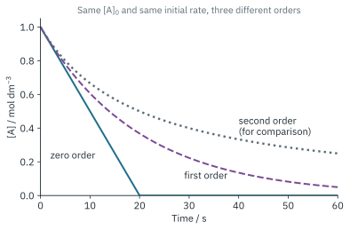
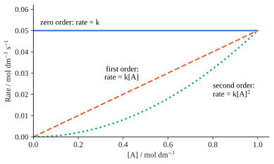
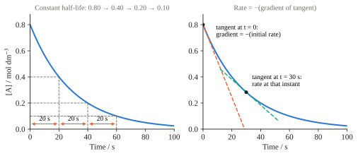

Reaction Kinetics 1
Topic 8 · Reaction Kinetics Part 1
On this page
Key terms
These are the terms the syllabus expects you to explain and use. Learn the wording; most of them come up again in Part 2.
| Term | Meaning |
|---|---|
| Rate of reaction | The change in concentration of a reactant or product per unit time. Units: mol dm−3 s−1. |
| Rate equation | rate = k[A]x[B]y. It shows how the rate depends on the concentrations of the reactants. It can only be found by experiment. |
| Order of reaction | The power to which the concentration of a reactant is raised in the rate equation. The overall order is the sum of the powers, x + y. |
| Rate constant, k | The constant of proportionality in the rate equation. It is constant at a fixed temperature. It increases when temperature increases or when a catalyst is added. |
| Half-life, t1/2 | The time taken for the concentration of a reactant to fall to half of its initial value. |
| Rate-determining step | The slowest step in a multi-step reaction mechanism. It governs the rate of the overall reaction. |
| Activation energy, Ea | The minimum energy that colliding particles must possess for a reaction to take place. (Part 2) |
| Catalysis | The increase in rate of a reaction brought about by a catalyst. The catalyst provides an alternative reaction pathway of lower activation energy and is chemically unchanged at the end. (Part 2) |
The rate equation
In a reaction where A + B → C, the rate equation1 is
rate = k[A]x[B]y
- k is the rate constant
- x is the order of reaction with respect to A
- y is the order of reaction with respect to B
- x + y is the overall order of reaction.2
The rate constant
Its units change as the rate equation changes.3 The quickest way to get them is to rearrange the rate equation, k = rate / ([A]x[B]y), and cancel the units.
| Overall order | Rate equation (example) | Units of k |
|---|---|---|
| 0 | rate = k | mol dm−3 s−1 |
| 1 | rate = k[A] | s−1 |
| 2 | rate = k[A]2 or k[A][B] | mol−1 dm3 s−1 |
| 3 | rate = k[A]2[B] | mol−2 dm6 s−1 |
Worked and explained example
The reaction 2NO(g) + 2H2(g) → N2(g) + 2H2O(g) is followed by the initial rates method. The data below are illustrative.
- What is the rate equation?
- What are the units and value of the rate constant?
| Expt | Initial [NO] / mol dm−3 | Initial [H2] / mol dm−3 | Initial rate / mol dm−3 s−1 |
|---|---|---|---|
| 1 | 6.00 × 10−3 | 1.00 × 10−3 | 3.19 × 10−3 |
| 2 | 6.00 × 10−3 | 2.00 × 10−3 | 6.36 × 10−3 |
| 3 | 6.00 × 10−3 | 3.00 × 10−3 | 9.56 × 10−3 |
| 4 | 1.00 × 10−3 | 6.00 × 10−3 | 4.80 × 10−4 |
| 5 | 2.00 × 10−3 | 6.00 × 10−3 | 1.92 × 10−3 |
| 6 | 3.00 × 10−3 | 6.00 × 10−3 | 4.30 × 10−3 |
Rate equation, rate = k[NO]x[H2]y
(To answer part (a), you have to find the values of x and y.)
In expts 1 to 3, [NO] is kept constant, so k[NO]x is also constant and rate ∝ [H2]y.
(We can see from this that if y = 1, when [H2] doubles, rate doubles; if y = 2, when [H2] doubles, rate increases by 4 times.)
From expt 1 to expt 2, [H2] doubles and the rate changes by a factor of 6.36 × 10−3 / 3.19 × 10−3 = 1.99 ≈ 2. So y = 1: the reaction is first order with respect to H2. (Expt 3 confirms it: [H2] triples, rate triples.)
In expts 4 to 6, [H2] is kept constant, so rate ∝ [NO]x.
From expt 4 to expt 5, [NO] doubles and the rate changes by a factor of 1.92 × 10−3 / 4.80 × 10−4 = 4.00. So x = 2: the reaction is second order with respect to NO. (Expt 6: [NO] triples, rate increases 8.96 ≈ 9 = 32 times.)
Hence, the rate equation is rate = k[NO]2[H2].
(Now we can proceed to solve part (b). Substitute any set of values from the data into the rate equation you have found and solve for k.)
9.56 × 10−3 = k(6.00 × 10−3)2(3.00 × 10−3)
k = 8.85 × 104 mol−2 dm6 s−1
(The reaction is overall third order, so k has the third-order units from the table above.)4
Using the rate equation. Once k is known, the initial rate can be calculated for any concentrations. For [NO] = 4.00 × 10−3 mol dm−3 and [H2] = 5.00 × 10−3 mol dm−3:
rate = (8.85 × 104)(4.00 × 10−3)2(5.00 × 10−3) = 7.08 × 10−3 mol dm−3 s−1
Determining the order of reaction
(1) Initial rates method
In the example above, a series of experiments was run. In each experiment only one initial concentration is changed while the others are kept the same, and the initial rate (the rate at the very start of the reaction) is measured.5 Using the initial rate means the concentrations are known exactly: they are the ones you made up.
The initial rate can be found by drawing a tangent to the concentration-time curve at t = 0 (Fig 3), or by a ‘clock’ method, where the time, t, taken to form a small fixed amount of product is measured. For a clock method, initial rate ∝ 1/t.
(2) Isolation method and pseudo-order reactions
If one reactant is used in a large excess (typically at least 10 to 20 times), its concentration hardly changes during the experiment and can be taken as constant. This isolates the other reactant, whose order can then be found from a single run.
For 2NO + 2H2 with NO in large excess:
rate = k[NO]2[H2] = k′[H2], where k′ = k[NO]2
The reaction now behaves as if it were first order overall. This is called a pseudo-first order reaction, and k′ is the pseudo-first order rate constant.6 Note that NO has not become zero order. The reaction is still second order with respect to NO; its concentration simply does not change enough to show it.
(3) Graphs
For A + 2B → 3C,
The rate of a reaction at any instant is therefore the gradient of the concentration-time graph at that instant (taken as positive, since the concentration of a reactant falls). To find it, draw a tangent to the curve at that time and measure its gradient. At t = 0 this gives the initial rate.7


| Order | Concentration-time graph | Rate-concentration graph | Successive half-lives |
|---|---|---|---|
| 0 | Straight line; constant gradient | Horizontal line | Decrease (each one halves) |
| 1 | Curve (exponential decay) | Straight line through the origin | Constant |
| 2 (for comparison) | Curve; falls more slowly than first order as [A] drops; longer tail | Curve (parabola) through the origin | Increase (each one doubles) |
Half-life
The half-life, t1/2, is the time taken for the concentration of a reactant to fall to half of its initial value. If the initial concentration of a reactant A is 1.00 mol dm−3, the half-life is the time at which [A] = 0.500 mol dm−3.
Intuitively, the faster the reaction, the shorter the half-life. The rate of the reaction is proportional to the rate constant; thus the larger the rate constant, the shorter the half-life. For a first-order reaction,8
For a first-order reaction, the half-life is independent of concentration. It depends only on k. If we look at the concentration-time graph of a first-order reaction, after each period equal to t1/2, half of the concentration at the start of that period remains. This is true from any starting point on the graph (Fig 3, left). It is not true for zero- or second-order reactions.
After n half-lives, the fraction of reactant remaining is (½)n.

Experiments to determine rate
Choose a property that changes as the reaction proceeds and that can be measured without disturbing the reaction. If there is no such property, take samples and stop them reacting before you measure. Depending on the reaction, the progress can be followed in one of these ways.
- Measuring volumes of gases evolved. If a reaction gives off a gas, read how much gas has been evolved after set times using a gas syringe. Sodium carbonate or magnesium with hydrochloric acid are examples. (Alternatively, follow the loss of mass on a balance as the gas escapes.)
- Measuring electrical conductivity of a solution. If the reaction changes the number or type of ions in solution, the change in conductivity can be measured.
- Measuring the change of colour with a colorimeter. If a coloured species is used up or formed, for example bromine with methanoic acid (the orange colour of Br2 fades), a colorimeter can follow its concentration.
- Titrating samples at fixed intervals. This is awkward, as it involves withdrawing a sample and titrating it, so the reaction must be slow. The sample must usually be ‘quenched’ first, to stop the reaction. Quenching can be done by adding another reagent (for example neutralising an acid catalyst with sodium hydrogencarbonate) or by diluting in ice-cold water. In the iodination of propanone, the remaining iodine is titrated with sodium thiosulfate.
- Clock methods. Measure the time taken for a fixed amount of product to form, for example the time for the solution to turn blue-black in an iodine clock, or for a cross under the flask to disappear as sulfur forms from thiosulfate and acid. Rate ∝ 1/t.
Reaction mechanisms and the rate equation
Most reactions happen in a series of steps, called the reaction mechanism. The slowest step of a multi-step reaction determines the rate of the whole reaction. It is called the rate-determining step.
Linking the mechanism to the rate equation:
- The rate equation contains the species that take part in the rate-determining step (and in any fast steps before it). The order with respect to each matches the number of those particles involved.
- Species that only react after the rate-determining step do not appear in the rate equation. They are zero order.
- A catalyst can appear in the rate equation even though it is not in the overall equation.
- The steps of the mechanism must add up to the overall equation.
Verifying a mechanism
NO2(g) + CO(g) → NO(g) + CO2(g). Experimentally, rate = k[NO2]2. A proposed mechanism is:
Step 1: NO2 + NO2 → NO3 + NO (slow)
Step 2: NO3 + CO → NO2 + CO2 (fast)
- The steps add up to the overall equation (NO3 and one NO2 cancel).
- The slow step involves two NO2, so the reaction is second order with respect to NO2.
- CO only reacts after the slow step, so it is zero order.
The mechanism is therefore consistent with the observed kinetics. (Consistent does not mean proven. Another mechanism might fit the data as well.)
Predicting the order from a mechanism
Hydrolysis of halogenoalkanes (Topic 11) shows both cases.
2-bromo-2-methylpropane reacts in two steps (SN1):
(CH3)3CBr → (CH3)3C+ + Br− (slow)
(CH3)3C+ + OH− → (CH3)3COH (fast)
Only the halogenoalkane is in the slow step, so rate = k[(CH3)3CBr]: first order overall and zero order with respect to OH−.
Bromomethane reacts in one step (SN2), in which OH− attacks as Br− leaves:
CH3Br + OH− → CH3OH + Br−
Both species are in the only step, so rate = k[CH3Br][OH−]: second order overall.
A fast equilibrium before the slow step
When a fast equilibrium comes before the slow step, the species in that equilibrium also appear in the rate equation (rule 1). Tutorial 1, Question 1 (propanone and iodine) is an example: H+ appears in the rate equation even though it is a catalyst.
Additional information
- This is called the rate equation (or rate law). It can only be found by experiment. ↩
- For your syllabus, x and y are 0, 1 or 2. ↩
- If you notice, the units ‘increase’ with each order: each time the overall order goes up by one, divide the previous unit by mol dm−3. ↩
- Different rows of data give slightly different values of k (8.0 to 8.9 × 104 here) because real data carry experimental error. Any row is acceptable in an exam; averaging several is better practice. ↩
- By keeping all but one of the concentrations constant, we eliminate all but one unknown power from the rate equation, and can then find it. ↩
- The pseudo-first order rate constant is a combination of two terms: k′ = k[NO]2. If the experiment is repeated with a different excess of NO, k′ changes, and the order with respect to NO can be found from that too. ↩
- Beyond the syllabus: the link between the concentration-time curve and the rate equation is the integrated rate equation. For a first-order reaction, [A] = [A]0e−kt. Integrated forms are not required by 9476. ↩
- Beyond the syllabus: from rate = −d[A]/dt = k[A], integrating gives ln([A]0/[A]) = kt. At t = t1/2, [A] = ½[A]0, so kt1/2 = ln 2. You only need to use t1/2 = 0.693/k. ↩